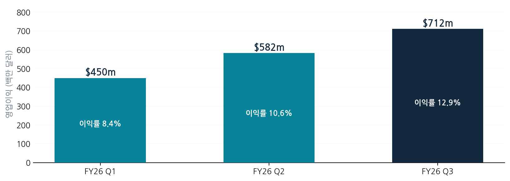
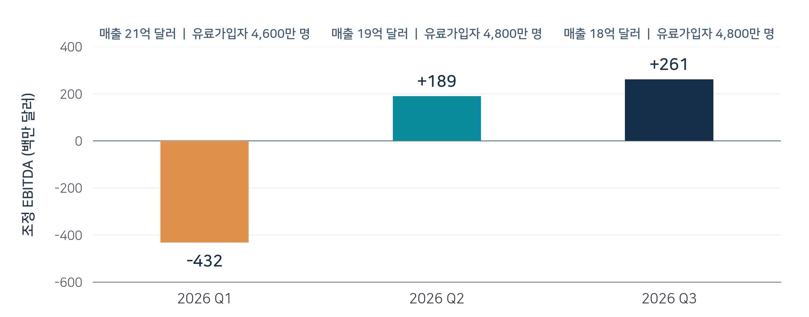
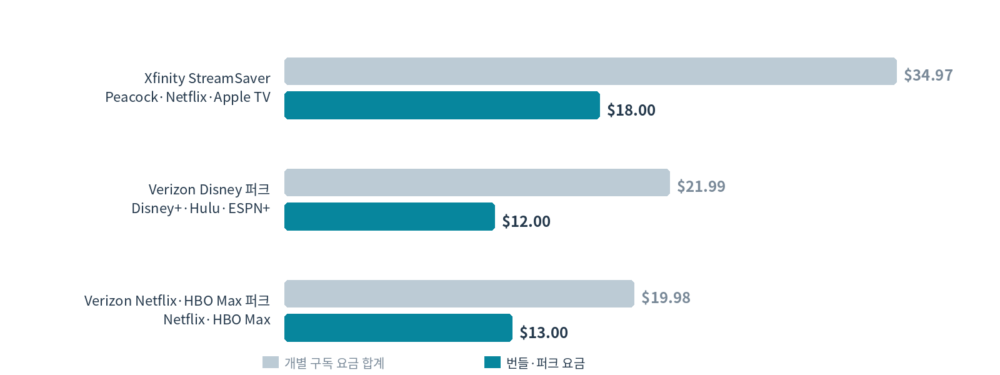
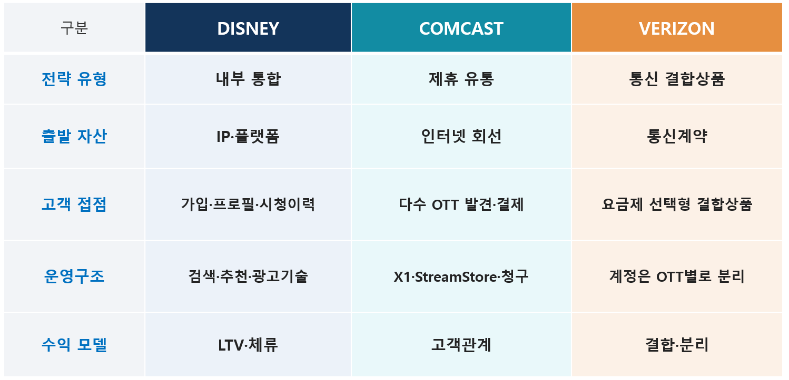

최근 미국 OTT 사업자들은 케이블TV의 채널 번들을 해체했던 흐름을 거슬러, 다른 형태의 번들로 다시 묶이고 있다. 과거 케이블TV의 채널 묶음을 해체하는 ‘언번들링(unbundling)’을 성장 동력으로 삼았던 스트리밍 사업자들이, 서비스 결합을 뜻하는 ‘재번들링(rebundling)’을 새로운 전략으로 채택한 것이다. 최근의 재번들링은 콘텐츠를 묶어 판매하는 수준을 넘어 가입·계정·결제, 나아가 콘텐츠 탐색과 추천에 이르기까지 소비자와 플랫폼이 만나는 접점을 확보하고 관리할 것인가의 영역으로 확장되고 있다. 콘텐츠 경쟁력이 여전히 중요한 토대라면, 고객 접점의 확보와 운영은 지속적인 수익성을 좌우하는 또 하나의 핵심 변수가 된 것이다.
딜로이트(Deloitte)의 2026년 미국 소비자 조사(응답자 3,575명)에 따르면, 미국 가구의 90%가 유료 SVOD 서비스를 이용하며, 평균 4개 서비스를 구독하고 있다. 또한 응답 소비자의 41%는 최근 6개월 사이 SVOD를 해지한 적이 있었고, 22%는 같은 기간 해지했던 서비스에 다시 가입한 경험이 있었다. 이는 OTT가 보편적인 미디어 소비 방식으로 자리 잡았지만 가입과 해지가 빈번하게 이루어지는 시장이 되었음을 보여준다. 소비자의 선택 폭은 확대되었으나, 사업자 입장에서는 마케팅 비용을 들여 확보한 고객이 특정 콘텐츠를 시청한 뒤 쉽게 이탈할 수 있다는 부담이 커졌다. 따라서 고객 이탈(churn)을 줄이고 장기적인 이용관계를 구축하는 일이 독점 콘텐츠 확보에 버금가는 전략 과제가 된 것이다.
본 글은 재번들링 과정에서 콘텐츠를 보유한 기업과 최종 소비자 접점을 관리하는 기업이 반드시 일치하지 않을 수 있으며, 두 기능을 결합하거나 분리하는 방식에 따라 플랫폼 경쟁의 양상이 달라질 수 있다는 점에 주목한다. 이를 위해 디즈니·컴캐스트·버라이존 세 사업자의 번들링 모델을 비교해 보면서, 각 사업자들의 차별화 전략과 특징을 살펴볼 것이다.
그동안 디즈니의 번들 전략은 Disney+/Hulu/ESPN을 저렴하게 묶어 제공하는 것으로 이해해 왔다. Disney+는 픽사 애니메이션과 마블·스타워즈 같은 대형 프랜차이즈 콘텐츠를, Hulu는 드라마·예능 등 일반 오락을, ESPN은 스포츠를 담당해 온 것은 출발점일 뿐이다. 최근 디즈니는 Disney+를 중심으로 소비자가 콘텐츠를 찾고 시청하며 브랜드와 관계를 맺는 과정을 연결하는 ‘디지털 관문(gateway)’으로 구축하고 있다. 2024년 12월 Disney+에 ESPN+ 콘텐츠를 위한 허브를 선보인 데 이어, 2026년 1월에는 앱의 탐색 화면과 개인화 추천 기능을 개선하였다.
2026년 5월 도입된 Hulu 프로필 연동은 이러한 방향을 보다 섬세하게 보여준다. Hulu 가입자는 ‘MyDisney’ 계정으로 Disney+에 접속해 프로필을 연결하고, Hulu의 시청이력과 찜 목록을 Disney+의 ‘이어보기(Continue Watching)’, ‘시청목록(Watchlist)’, ‘추천(For You)’ 등에 반영할 수 있다. 물론 모든 Hulu 가입자에게 예외 없이 적용되는 기능은 아니며, 연령 및 구독 유형과 출시 일정 등에 따른 제한이 있다. 이용자로서는 앱을 오가며 보던 콘텐츠를 다시 찾는 번거로움을 줄일 수 있고, 디즈니로서는 계정·프로필·시청기록·추천 기능 등 중요 데이터를 한곳에 모을 수 있다.
라이브 스포츠 역시 이러한 게이트웨이 전략에서 유용한 콘텐츠이다. 디즈니는 Disney+에 일부 ESPN 스포츠 콘텐츠를 노출하며 상위 번들 상품으로의 전환을 유도하면서, 일상적인 스포츠 시청의 주된 목적지는 ESPN으로 유지한다는 방침을 밝혔다.
이처럼 이용 경험의 통합이 진행되는 가운데 디즈니 스트리밍 사업의 수익성 지표도 개선되었다. Disney+와 Hulu의 구독형 스트리밍 사업을 포함하는 ‘Entertainment SVOD’ 영업이익은 2026 회계연도 1분기 4억 5,000만 달러, 2분기 5억 8,200만 달러, 3분기 7억 1,200만 달러로 증가하였다. 같은 기간 영업이익률은 8.4%, 10.6%, 12.9%로 높아졌으며, 3분기 매출은 55억 3,200만 달러로 전년 대비 11% 증가했다. 다만 이 수치는 디즈니가 자체 기준으로 산출한 엔터테인먼트 부문 구독형 스트리밍(SVOD) 영업이익(비GAAP 지표)이며, ESPN 사업 전체를 포함하지 않는다. 매출보다 영업이익이 빠르게 확대된 것은, 구독자가 늘어도 콘텐츠 제작비나 플랫폼 운영비 등 비용은 그만큼 늘지 않아 수익성이 개선되는 이른바 영업 레버리지(operating leverage) 효과가 나타나고 있음을 시사한다.

[그림 1] Disney Entertainment SVOD: 2026 회계연도 1~3분기 영업이익과 영업이익률
(출처: The Walt Disney Company (2026. 2. 2.; 5. 6.; 8. 5.), 2026 회계연도 1~3분기 SEC 실적 공시(위 Disney 실적 각주), 저자 재구성)
요약하면 디즈니형 번들은 세 가지 서비스들의 ‘묶음’보다 소비자 접점에서 쌓이는 ‘관계’에 있다고 볼 수 있다. 앱과 계정이 이어지고 시청이력·추천·광고 운영이 점차 하나로 연결될수록, 디즈니는 인기 작품에 대한 반복 방문과 추가 구매, 장기적인 팬 관계로 구축할 가능성이 커진다. 따라서 디즈니의 번들 전략은 신규 가입자 수가 아니라 번들 가입자의 유지율, ESPN 교차판매, 앱 이용 빈도, 광고 수익화, 고객생애가치(LTV)를 확장해가는 데 있다고 볼 수 있다.
디즈니가 자사 서비스를 하나로 엮는다면, 컴캐스트는 서로 경쟁하는 사업자들의 OTT를 한곳에 모아 제공한다. Peacock·Netflix·Apple TV·Disney+·Hulu·HBO Max 등 가입자를 놓고 경쟁하는 서비스들이 제3자인 컴캐스트의 판매창구에 함께 진열되는 구조다. 이 모델의 핵심은 ‘누가 더 좋은 콘텐츠를 보유했는가’보다 ‘소비자가 어디에서 서비스를 선택하고 결제하는가’에 있다.
그 출발점은 컴캐스트가 2024년 출시한 엑스피니티 스트림세이버(Xfinity StreamSaver)다. 당시 넷플릭스 광고형, 피콕 프리미엄(Peacock Premium), Apple TV+를 결합해 월 15달러에 제공하였다. 이후 스트림세이버의 월 요금은 2025년 12월 22일부터 18달러로 인상되었다.
이어 2025년 7월에는 스트림스토어(StreamStore)를 출시하여 번들과 개별 앱·채널을 한곳에서 살펴보고 구매하며, 요금까지 관리할 수 있는 유통 장터(marketplace)로 발전시켰다. 컴캐스트는 스트림스토어에서 450개가 넘는 앱·채널을 제공하며 약 20만 편의 영화·TV 타이틀을 임대하거나 구매할 수 있다고 설명한다.
이러한 모델에서 컴캐스트의 경쟁력은 콘텐츠 자체보다 콘텐츠와 소비자를 연결하는 플랫폼에 있다. 주요 OTT 사업자들이 각자의 콘텐츠와 IP를 보유하는 반면, 컴캐스트는 고객과의 지속적인 거래관계, 요금 청구·결제 시스템, 그리고 이를 뒷받침하는 브로드밴드 가입자 기반을 활용한다. 소비자는 여러 OTT 서비스를 개별적으로 가입·관리해야 하는 번거로움을 줄일 수 있고, 컴캐스트는 다양한 OTT를 구성·판매하는 플랫폼 사업자로서의 입지를 강화할 수 있다.
컴캐스트의 번들 전략을 평가할 때, 자체 OTT인 피콕의 실적도 함께 볼 필요가 있다. 피콕의 조정 상각 전 영업이익(EBITDA)는 2026년 1분기 4억 3,200만 달러 적자에서 2분기 1억 8,900만 달러, 3분기 2억 6,100만 달러 흑자로 전환되었다. 유료가입자는 1분기 말 4,600만 명에서 2·3분기 말 4,800만 명으로 증가하였다. 반면 매출은 1분기 약 21억 달러, 2분기 약 19억 달러, 3분기 약 18억 달러로 분기별 감소세를 보였다. 이는 가입자 증가만으로 수익성 개선을 설명하기 어렵다는 점을 보여준다.
실제로 피콕의 분기별 실적에는 동계올림픽과 슈퍼볼(1분기), FIFA 월드컵(2·3분기) 등 대형 스포츠 이벤트의 영향이 반영되어 있다. 특히 컴캐스트는 3분기 피콕의 매출과 조정 EBITDA에 FIFA 월드컵 관련 매출과 비용이 포함되어 있음을 명시하였다. 같은 기간 월드컵에 따른 추가 매출은 컴캐스트의 미디어 부문 전체에서 약 2억 2,400만 달러에 달했으나, 이는 피콕 단독 실적과는 구분되는 수치이며 관련 프로그램 제작·중계 비용도 함께 반영되었다. 따라서 피콕의 흑자 전환은 가입자 증가뿐 아니라 스포츠 이벤트에 따른 매출·비용 변동 등 여러 요인이 복합적으로 작용한 결과로 이해할 필요가 있다. 이를 컴캐스트의 OTT 번들 전략에 따른 직접적인 성과로 단정하는 데에는 신중할 필요가 있다.

[그림 2] 피콕의 2026년 분기별 수익성 및 유료가입자 추이
(출처: Comcast Corporation, 2026년 1, 2, 3분기 실적발표. 저자 재구성)
이러한 흐름은 컴캐스트 사업모델의 이중적인 성격을 보여준다. 컴캐스트는 피콕을 통해 콘텐츠 제작비와 스포츠 중계권 비용을 부담하면서, 동시에 넷플릭스와 같은 경쟁 OTT 사업자의 서비스를 소비자에게 제공하는 유통 플랫폼 역할도 수행한다. 요컨대, 컴캐스트형 모델은 콘텐츠를 소유하지 않고도 OTT 시장에서 영향력을 키울 수 있다는 것을 보여준 사례로, 경쟁하는 서비스들을 한 진열대에 올리고, 제휴 서비스의 가입과 결제, 구독 관리 기능을 자사의 브로드밴드 고객 접점에 결합하는 방식이다. 따라서 이 모델의 성패는 얼마나 많은 OTT를 묶느냐보다, 제휴 OTT와의 정산·노출 조건을 얼마나 유리하게 설계하느냐에 달려 있다. 콘텐츠 사업자가 ‘무엇을 볼 것인가’를 결정한다면, 컴캐스트형 모델은 ‘어디에서, 어떻게 보고 결제할 것인가’를 선점하는 전략이라 할 수 있다.
버라이존(Verizon)은 OTT를 휴대전화·인터넷 요금제에 덧붙이는 결합 혜택, 이른바 ‘퍼크(perk)’로 판매한다. 이용자는 자격 요건을 충족하는 통신요금제에 가입한 뒤 Netflix·HBO Max나 Disney+·Hulu·ESPN+ 등 결합상품을 추가 혜택으로 선택할 수 있으며, 해당 구독료를 통신요금과 함께 결제한다. 버라이존에게 OTT는 독립적인 수익상품이면서도 통신 가입을 유도하고 기존 고객과의 관계를 강화하는 수단이라고 볼 수 있다.
2026년 11월 공개 자료에 따르면, Disney+·Hulu·ESPN+ 광고형 결합 상품은 월 12달러, Netflix·HBO Max 광고형 결합 상품은 월 13달러이다. 버라이존이 제시한 비교가격은 각각 월 21.99달러와 19.98달러로, 표시가격상 절감액은 9.99달러와 6.98달러다. 가격 할인이 소비자를 끌어들이는 직접적인 유인이라면, 이러한 상품들의 가치는 OTT 요금을 통신요금과 한번에 내고 필요에 따라 결합 혜택을 손쉽게 바꿀 수 있다는 편의성에 있다.

[그림 3] 주요 OTT 번들의 공개 월 요금: 개별 구독과 번들·퍼크 요금 비교
(출처: Xfinity, “Bill Changes,”, Verizon 공식 퍼크 판매 페이지(2026년 11월 기준))
다만 요금을 한 번에 낸다고 해서 시청 서비스까지 하나로 합쳐지는 것은 아니다. 버라이존의 공식 안내에 따르면 넷플릭스와 HBO Max는 각각 별도의 계정 설정이 필요하며 콘텐츠도 개별 서비스에서 이용해야 한다. Disney+·Hulu·ESPN+ 결합 상품 역시 서비스별 접근 방식이 유지된다. 따라서 버라이존의 역할은 각 OTT의 시청 경험을 일원화하는 것이 아니라 구독과 청구를 통합적으로 관리하는 데 있다. 시청이력이나 추천 알고리즘까지 통합하는 모델과는 구분할 필요가 있다.
버라이존형 번들의 함의는 OTT 경쟁의 질문이 바뀌고 있다는 점이다. 소비자가 통신요금제 내에서 Netflix·HBO Max 묶음과 Disney+·Hulu·ESPN+ 묶음을 선택할 때, 그 선택·결제·변경이 이루어지는 접점에는 OTT 사업자가 아니라 통신사가 위치한다. 물론 시청 경험과 데이터는 여전히 각 OTT에 남아 있지만, 구독 관리의 주도권이 통신사 쪽으로 기울수록 OTT 사업자들은 정산 조건과 할인 부담, 고객 접점에서의 브랜드 노출 등을 놓고 통신사와 새로운 협상을 해야 한다.
지금까지 살펴본 세 가지 모델을 보면 그 차이가 뚜렷하다. 디즈니는 이용자의 취향과 시청 경험을 자사 IP·서비스와 연결하고, 컴캐스트는 경쟁 OTT를 한곳에서 찾고 비교·구매하도록 하는 유통 관문을 제공한다. 버라이존은 월정액 통신계약을 매개로 OTT 구독과 결제를 결합한다. 모두 ‘통합’을 추구하지만 실제로 확보하려는 고객 접점과 가치사슬의 단계는 서로 다르다.

[그림 4] 2026년 미국 OTT 재번들링의 세 모델 비교
(출처: The Walt Disney Company (2026. 5. 19.; 8. 5). 프로필 연동 안내 및 2026년 3분기 컨퍼런스콜; Comcast (2025. 7. 23). StreamStore 출시자료; Verizon (2026. 11월 기준), 공식 결합 상품(perk) 판매 페이지를 바탕으로 저자 재구성. 그림의 ‘수익 모델’은 개별 기업이 공시한 단일 KPI가 아닌 분석적 개념임)
[그림 4]와 같이 OTT 재번들링은 ①가격·상품의 결합, ②가입·청구의 통합, ③앱·검색·추천 등 이용 경험의 연결, ④광고·데이터·수익화 기술의 통합으로 구분할 수 있다. 디즈니는 자사 서비스를 중심으로 ③과 ④의 영역까지 확장하고 있으나, 컴캐스트와 버라이존이 제휴 OTT에 행사할 수 있는 권한은 개별 계약과 서비스 구조에 따라 달라진다. 결국 서두에서 제기한 ‘콘텐츠보다 플랫폼인가’라는 질문은 어느 한쪽의 우위를 가리는 문제로만 볼 수 없다. 콘텐츠가 여전히 소비자를 끌어들이는 핵심 동력이라면, 이들을 장기적으로 유지하고 지속적인 수익으로 연결하는 경쟁력은 플랫폼이 고객 경험과 관계를 어떻게 설계하고 관리하느냐에 달려 있다.
미국의 재번들링 모델이 국내 시장에 던지는 메시지는 분명하다. 넷플릭스 등 글로벌 사업자와 경쟁해야 하는 국내 사업자들은 할인에 의존한 가입자 확대뿐만 아니라 이용자가 콘텐츠를 쉽게 발견하고 서비스를 지속적으로 이용하도록 하는 역량을 갖춰야 한다. 즉 이용 경험을 연결하고 데이터·광고 수익화를 고도화하는 단계로 나아가는 것이 중요하다. 이를 위해 가입자 수와 결합상품 판매량뿐만 아니라 고객 유지율, 실제 이용 빈도, 가입자당 수익과 제휴 비용을 함께 고려해서 실질적인 수익으로 이어져야 한다.
최근 국내 OTT 시장에서도 번들링 전략에 변화가 시작되었다. 티빙과 웨이브는 2025년 6월 하나의 구독으로 두 서비스를 이용하는 ‘더블 이용권’을 출시했고, 네이버는 2024년 11월부터 넷플릭스를 네이버플러스 멤버십의 선택형 혜택으로 제공하고 있다. 티빙·웨이브는 콘텐츠와 가입자 기반의 결합을 통해 OTT 자체의 경쟁력을 강화하려는 모델로, 디즈니형과 유사한 측면이 있다. 반면 네이버·넷플릭스는 기존 플랫폼의 고객관계를 활용하여 OTT를 유통하는 모델로, 버라이즌형에 상대적으로 가깝다. 다만 티빙·웨이브는 상품 결합을 넘어 통합 광고 플랫폼을 출범시키는 등 광고사업으로 협력을 확대하고 있다는 점에서 차이가 있다. 결국 전자는 콘텐츠 경쟁력과 광고 수익성 강화에, 후자는 멤버십 고객의 유지와 유통경로 확대에 무게를 두고 있다. 따라서 국내 번들 전략의 성과 역시 가입자 증가보다는 각 사업모델의 목적에 따라 고객 유지율, 광고 수익성, 멤버십 이용 확대 등 차별화된 지표로 평가할 필요가 있다.
이제 국내 사업자들은 저마다 가진 강점을 어떻게 연결할 것인지 고민할 때이다. 그동안 콘텐츠 기업은 IP와 시청 데이터를, 통신사는 청구·결제와 장기 가입 관계를, 포털·커머스 플랫폼은 일상적인 소비자 접점을 보유해 왔다. 이제 어느 영역을 직접 관리하고, 어떤 기능을 제휴를 통해 보완하는지에 따라 수익 구조와 고객 관리의 주도권이 달라질 수 있다. 특히 외부 플랫폼을 통해 가입자를 확보할 때에는 정산 조건, 고객정보에 대한 접근·이용 범위, 화면 내 노출 조건을 함께 고려해야 할 것이다.
결국 재번들링의 성패는 묶음 상품의 개수나 할인율보다 소비자에게 편리한 이용과 폭넓은 선택을 제공하면서, 사업자에게는 지속 가능한 수익구조를 만들어 낼 수 있느냐에 달려 있다. 이제 국내 시장도 ‘다시 묶는 방법’을 넘어 ‘함께 묶인 이후의 고객 경험과 수익을 설계하는 방법’을 모색할 때이다.
참고문헌
- 네이버(2024. 9. 30). 11월부터 네이버플러스 멤버십에서 넷플릭스 볼 수 있다…네이버, 멤버십 혜택 외연 확장 지속.
- CJ ENM (2025. 6. 16). 하나의 구독, 두 배의 즐거움: 티빙, 웨이브와 ‘더블 이용권’ 출시.
- TVING (2025). 「티빙×웨이브 더블 이용권」 안내.
- CJ 뉴스룸 (2025. 9. 19). 티빙 x 웨이브, 국내 최대 OTT 광고 플랫폼 출범.
- Apple (2026. 11월 기준). “Apple TV.”
- Comcast (2024. 5. 21). “Comcast Introduces Peacock, Netflix and Apple TV+ Streaming Bundle.”
- Comcast (2025. 7. 23). “Comcast’s Xfinity Unveils StreamStore: A Smarter, Simpler Way to Discover, Manage and Enjoy Entertainment.”
- Comcast (2026. 4. 23). “Comcast Reports 1st Quarter 2026 Results.”
- Comcast (2026. 7. 23). “Comcast Reports 2nd Quarter 2026 Results.”
- Comcast (2026. 10. 22). “Comcast Reports 3rd Quarter 2026 Results.”
- Deloitte (2026. 3. 25). “2026 Digital Media Trends: Capturing always-on fandom between releases and seasons,” 20th ed.
- Disney+ (2026. 1. 9). “The Disney+ App Just Got an Update, Here’s What You Need to Know.”
- Hulu Help Center (2026. 5. 19). “How to link your Hulu profile to Disney+.”
- Netflix (2026. 11월 기준). “Plans and Pricing.”
- Peacock (2026. 11월 기준). “Choose a Plan.”
- The Walt Disney Company (2024. 12. 4). “Game On: ESPN on Disney+ Launches Today.”
- The Walt Disney Company (2026. 2. 2). “First Quarter Earnings for Fiscal 2026,” SEC Exhibit 99.1.
- The Walt Disney Company (2026. 5. 6). “Second Quarter Earnings for Fiscal 2026,” SEC Exhibit 99.1.
- The Walt Disney Company (2026. 5. 19). “Hulu on Disney+ Just Got Better: What You Need to Know About Linking Your Profiles.”
- The Walt Disney Company (2026. 6. 4). “Scaling Viewer-First Premium Advertising on Disney+.”
- The Walt Disney Company (2026. 8. 5). “Third Quarter Earnings for Fiscal 2026,” SEC Exhibit 99.1.
- The Walt Disney Company (2026. 8. 5). “Q3 FY26 Earnings Conference Call Transcript.”
- Verizon (2026. 11월 기준). “Disney+, Hulu, & ESPN+.”
- Verizon (2026. 11월 기준). “Netflix & HBO Max (With Ads).”
- Xfinity (2026. 11월 기준). “Bill Changes.”